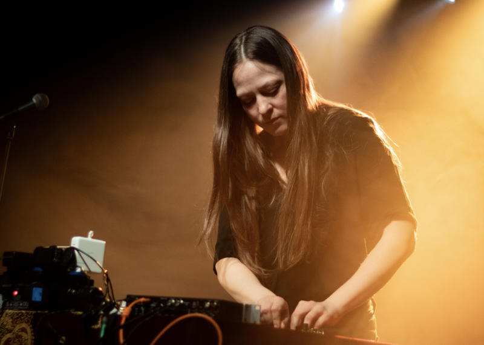
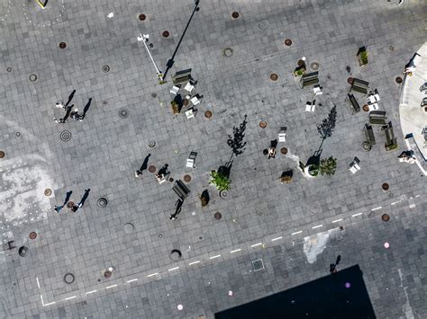
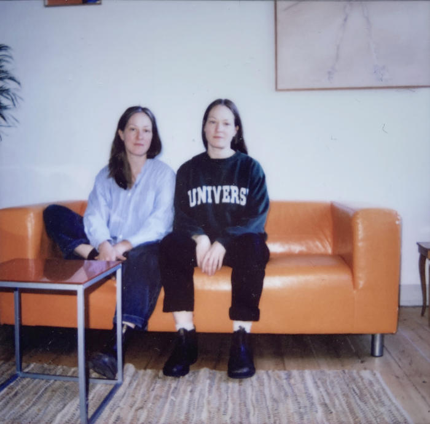
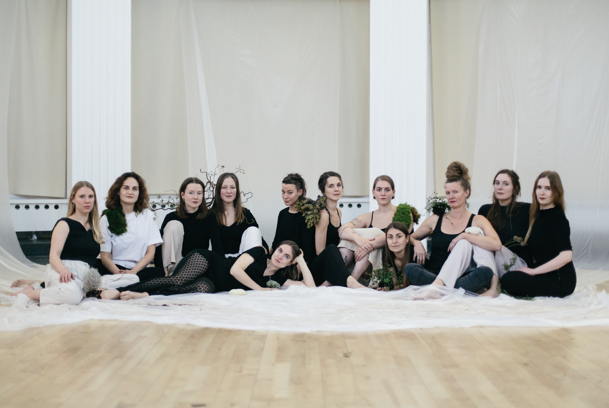
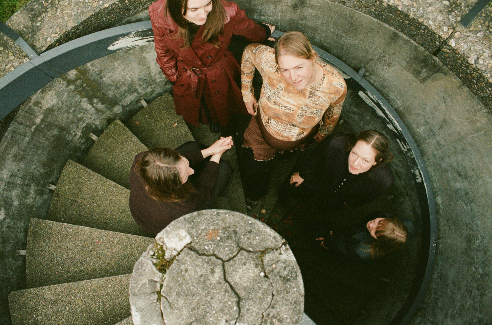
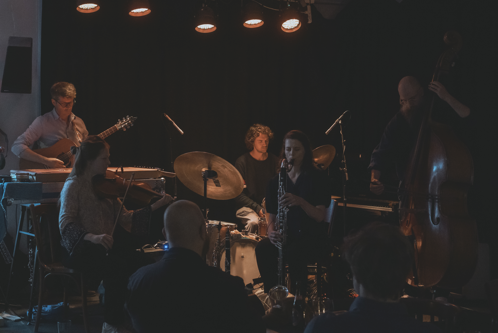

CURRENT PROJECTS

Solo
Pauline Hogstrand’s solo project centres on the viola as a source of sound, gesture and musical material. Combining acoustic instruments, electronics, sampling and synthesis, she develops music through an iterative process of recording, processing, reworking and re-performing. The music moves between song-like forms, intricate textures and electronic resonances, bringing together the organic and the synthetic in a practice shaped by curiosity, transformation and a sense of lightness.

Electroacoustic works / Composition
Pauline Hogstrand’s electroacoustic practice encompasses compositions, sound installations and spatial works exploring sound, perception and the relationship between listening and environment. Working with acoustic material, recording, synthesis and electronic transformation, she develops musical structures that often emerge through processes of repetition, resonance and gradual change. Her works take different forms and scales, from multichannel compositions to site-specific sound installations, with an ongoing interest in how sound can shape the experience of space and time.

Pauline Hogstrand & Nicole Hogstrand
Pauline Hogstrand and Nicole Hogstrand are a duo for viola, cello and electronics. Working with acoustic instruments, feedback, recording and electronic processing, they explore the relationship between sound, gesture and musical form. Their practice moves between composition and improvisation, allowing the instruments to extend beyond their familiar roles and become part of a shared sonic environment. Through co-composition and attentive listening, the duo develops music that unfolds through resonance, shifting textures and unexpected connections.

Damkapellet
Damkapellet is a Copenhagen-based collective of women, non-binary and trans composers working across contemporary music and experimental practices. The collective explores alternative approaches to composition, performance and collaboration, creating space for artistic exchange and diverse musical perspectives. Through concerts, commissions and collective projects, Damkapellet brings together different practices and ways of working, challenging established structures while developing new contexts for experimental music.

Crush String Collective
Crush String Collective is a string ensemble exploring the possibilities of collective improvisation and experimental string playing. Working with an odd instrumentation of 2 violin, 2violas and 2 celli, the group develops a shared musical practice shaped by attentive listening, open structures and spontaneous interaction. The music moves between delicate acoustic textures, dense sonic gestures and shifting rhythmic patterns, treating the string ensemble as a flexible and continuously evolving instrument. Composition and improvisation meet in a practice where individual contributions become part of a collective sound.

Blue Lake
Blue Lake is the musical project of composer and multi-instrumentalist Jason Dungan. Combining acoustic instruments, electronics and experimental songwriting, the music brings together intricate arrangements, cyclical patterns and a distinctive sense of movement. Moving between carefully shaped compositions and open-ended musical gestures, Blue Lake creates an expansive sonic world in which repetition, melody and texture interact. Pauline Hogstrand performs with the project, contributing viola and other instrumental elements to its evolving musical landscape.